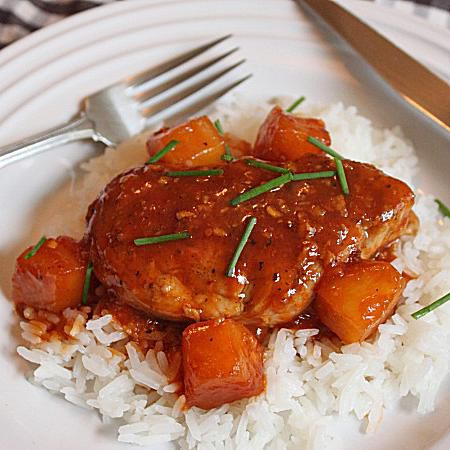

Sweet & Sour Pork Tenderloin

This is a tasty dish known as Sweet & Sour Pork.
Sweet and sour is a generic term that encompasses many styles of sauce, cuisine and cooking methods. It is commonly used in East Asia and Southeast Asia, and has been used in England since the Middle Ages. Sweet and sour sauce remains popular in Asian and Western cuisines.
Ingredients
- Pork Tenderloin
- Salt & Ground Black Pepper
- Ketchup
- Rice Vinegar
- Pineapple
- Brown Sugar
- Garlic
- Sriracha
- Soy Sauce
- Green Onion
- Butter
Instructions
- Cut tenderloin into 4 pieces. Arrange in a single layer between two sheets of plastic wrap and pound with a meat mallet until each is about 1-inch thick. Generously season with salt and black pepper.
- Whisk ketchup, rice vinegar, reserved pineapple juice, brown sugar, garlic, hot chili sauce, soy sauce, and red pepper flakes in a bowl. Set aside.
- Heat vegetable oil in a skillet over high heat. Place pork in pan; reduce heat to medium. Cook until browned on both sides and cooked through, 5 to 6 minutes per side. Transfer to a plate.
- Return skillet to medium heat. Stir butter into hot pan. When butter melts and starts to brown, stir in pineapple chunks. Cook, stirring, until pineapple is golden brown, 3 to 4 minutes.
- Stir in ketchup mixture and 1/4 cup green onion (white parts). Reduce heat to low and simmer until garlic and onion have softened, 5 minutes.
- Return pork to skillet; cook, stirring, until pork is heated through. Garnish with 2 tablespoons green onion tops.
Home